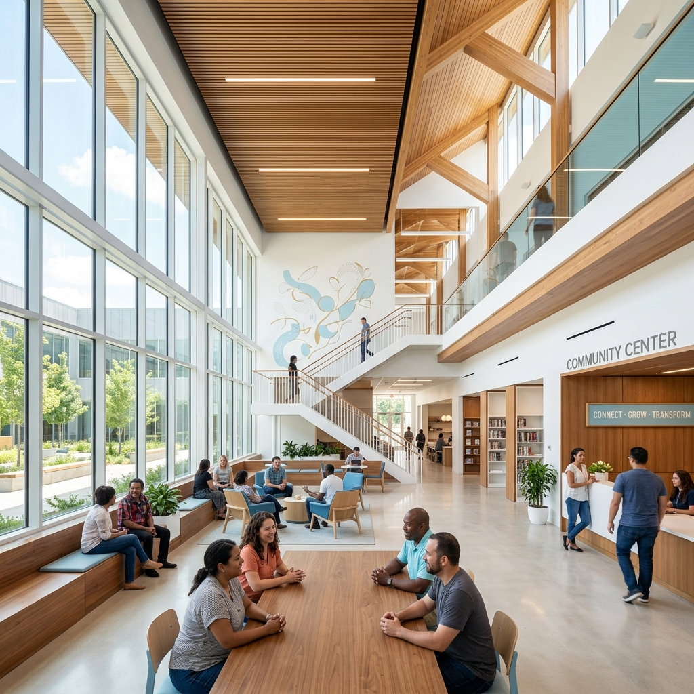
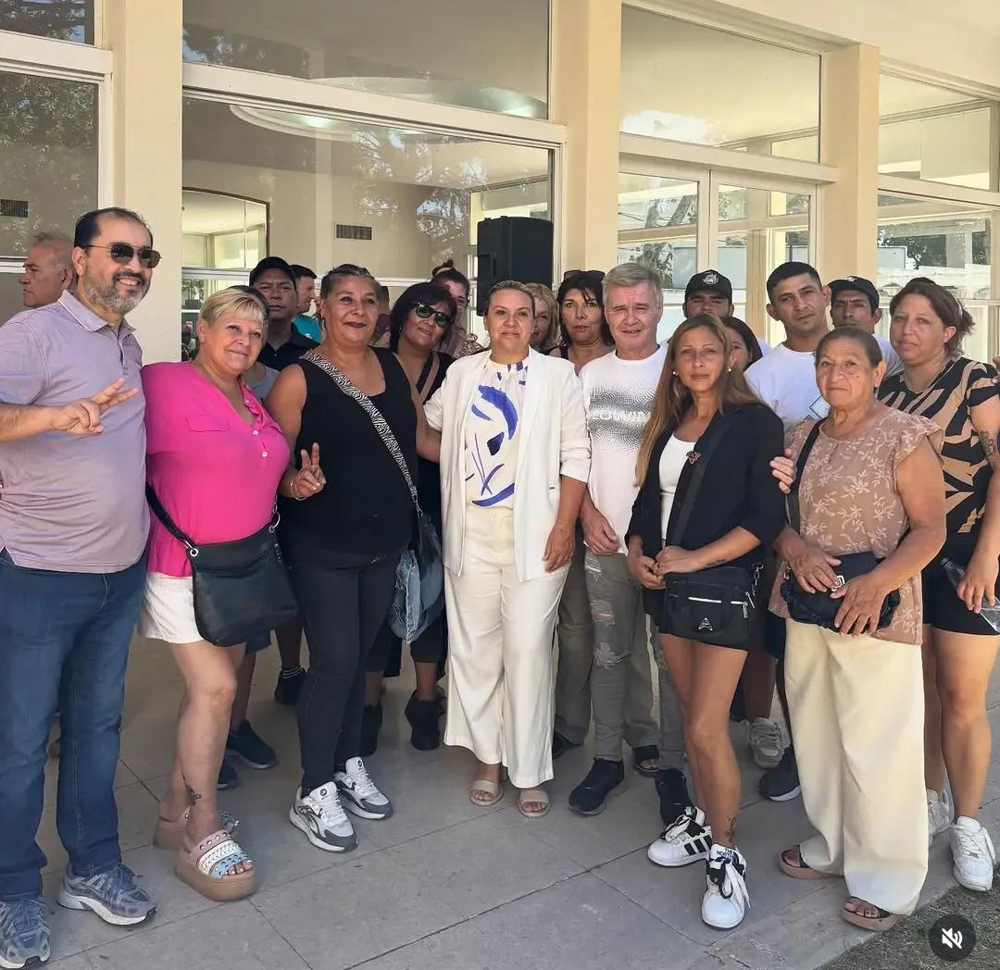
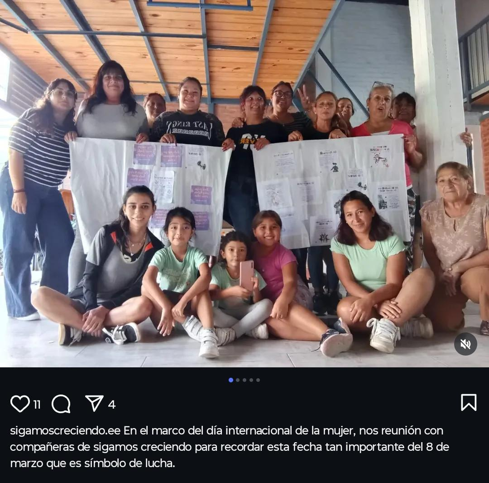
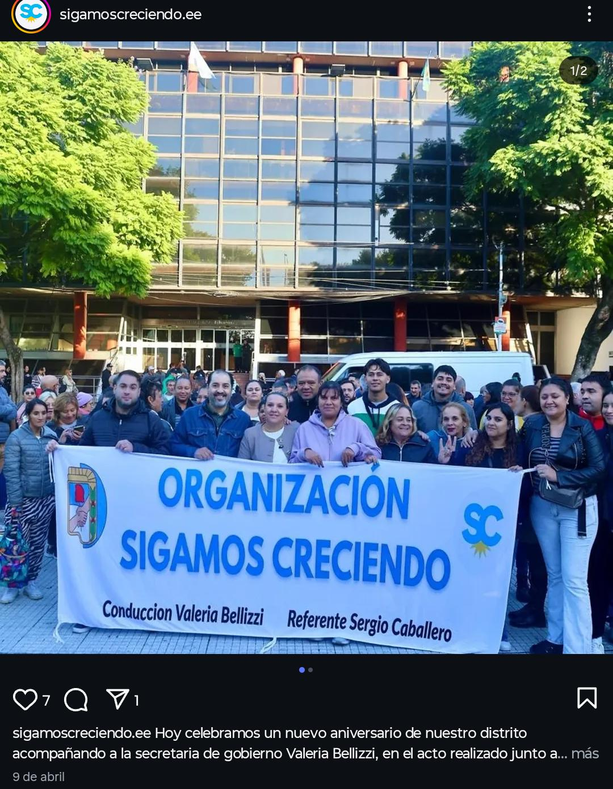

Somos una organización política que promueve la participación activa de la comunidad, el debate y la formación política desde una mirada comprometida con la realidad social del país.
Sumate hoyConocé nuestra historia y nuestros valores
Este espacio está liderado por Sergio Caballero, ex concejal (MC) de Esteban Echeverría y ex congresal provincial del Partido Justicialista.
Nos identificamos con los valores del peronismo, trabajando firmemente por una sociedad más justa, inclusiva y con oportunidades reales para todos y todas.
Nos distingue la integración horizontal y el debate intergeneracional. Jóvenes y adultos construyen a la par, priorizando el bienestar de los vecinos.
Creemos en la necesidad de fortalecer el peronismo como herramienta política para transformar la realidad de nuestro país.
Nuestro mayor objetivo es contribuir a recuperar instituciones con plena justicia social y representatividad, devolviendo el protagonismo al pueblo.
Organización, debate y acompañamiento constante en Esteban Echeverría

Hoy celebramos un nuevo aniversario de nuestro distrito acompañando a la secretaria de gobierno Valeria Bellizzi, apostando por la unidad de los vecinos.

En el marco del Día Internacional de la Mujer, nos reunimos con las compañeras de Sigamos Creciendo para recordar esta fecha tan importante del 8 de marzo que es símbolo de lucha.

O cuando participamos del inicio de un nuevo periodo legislativo en nuestro distrito acompañando al intendente Fernando Gray a la secretaria de gobierno Valeria Bellizzi.
¿Qué tan convencido estás? Respondé estas 3 rápidas preguntas y sumate a la transformación.
Invitamos a todas las personas interesadas en la transformación social de Esteban Echeverría
📍 Zona: Esteban Echeverría y alrededores
📩 Contacto: Para más información, escribinos ahora.
Contactarnos por WhatsApp